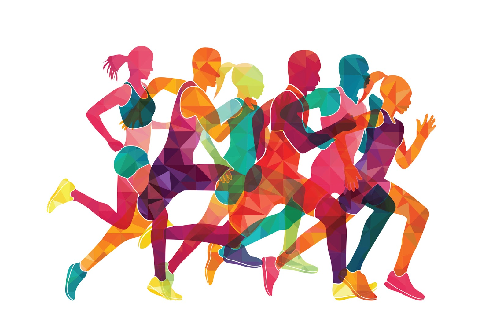

La educación física se remonta a los orígenes del hombre. Responde inicialmente a necesidades de supervivencia, en lo que hace a la obtención de alimentos (persecución, trepar, tracción, etc.), la vivienda y la vestimenta son una construcción en base al esfuerzo físico. A finales del siglo XX, las escuelas e institutos de formación de profesorado de educación física alcanzaron un nivel universitario. Se considera que el creador de esta rama educativa tal y como se conoce hoy en día fue Friedrich Ludwig Jahn. Durante el siglo XIX, Jahn estableció en Alemania la primera escuela de gimnasia. La educación física aplicada de forma sistematizada y con objetivos tiene sus orígenes en las antiguas civilizaciones, India y China, donde la práctica era de forma semejante a nuestra gimnasia, recibiendo el nombre de Kung-Fu, creado hacia el año 270 a. C., con un fin religioso, curar el cuerpo de enfermedades y debilidades que le impidieron ser un servidor del alma.4 En Esparta, se buscaba la combinación de hombre de acción con hombre sabio, programa educativo que más tarde se llamó Palestra. En cuanto a Roma, la educación física era muy parecida a la espartana, ya que el protagonista era el deportista. Galeno fue la primera persona en proponer ejercicios específicos para cada parte del cuerpo y utilizar el pulso como medio para detectar los efectos del ejercicio físico. Durante la época visigoda, ya se practicaban deportes tales como: lucha, saltos, lanzamiento de jabalina y esgrima. La educación física moderna nació a principios del siglo XIX en Suiza y Alemania con deportes como: saltos, carreras y luchas al aire libre, natación, equilibrio, danza, esgrima, escalamiento, equitación y running. En Inglaterra nacieron el fútbol, el rugby, el cricket y los deportes hípicos. A finales del siglo xix nacen los deportes de velocidad, tales como el ciclismo y el automovilismo, los cuales combinan la habilidad física con la eficiencia mecánica. La educación física se origina a través de las actividades físicas que el ser humano trató de sistematizar en la Antigüedad para mejorar su condición física para la guerra. En distintas épocas y lugares la concepción de la educación física no ha sido siempre la misma. Tomada ésta como disciplina científico-pedagógica, varía su enfoque según los diversos paradigmas dominantes en el terreno social y, naturalmente, en el pedagógico. Esto ha sido tan fluctuante que, en muchos casos, se la ubicó variando su centro de las ciencias biológicas y en otros en las ciencias sociales.
Las finalidades de la educación y de la educación física son similares, entre ellas se encuentran el desarrollo del individuo y la preparación para una vida con responsabilidades de acuerdo a las costumbres y pensamientos de cada institución. La formación de hábitos en la actividad física será de gran ayuda para el estudiante, pues algunas investigaciones han demostrado que algunas enfermedades cardíacas aparecen durante los dos primeros años de edad y puede extenderse hasta los 19 años, la gravedad del asunto es que si los niños y jóvenes no mejoran sus hábitos podrían sufrir seguramente de presión alta u obesidad en la edad adulta. Por otra parte, se hacen señalamientos sobre el riesgo del sedentarismo, se hizo un estudio donde se examinaron 5000 jóvenes de Estados Unidos donde el 70 % tuvieron diferentes enfermedades en relación con el corazón, 7 % con niveles altos de colesterol y un 12% con obesidad. Es una gran problemática que requiere urgente atención; la realización de actividad física reduce la aparición de enfermedades crónicas, aumento de peso, enfermedades causadas por el estrés, entre otras. Los jóvenes pasan la mayor parte de su tiempo en planteles educativos donde practican mucha actividad física, ahí es donde comienzan a poner en práctica sus habilidades. La educación física además de favorecer el conocimiento y la teoría también debe favorecer el crecimiento íntegro de los educandos, para ello debe brindar mayor importancia a la educación en valores que dignifique a los estudiantes como personas.
La actividad física genera muchos beneficios para mantener una vida saludable como lo es la regulación de peso corporal evitando la obesidad, previene enfermedades degenerativas y cardiovasculares. La educación física, por tanto, aporta grandes potenciales para que la población escolar cambie malos hábitos por hábitos saludables fortaleciendo también los valores sobre la salud, los derechos y obligaciones.6 Si los jóvenes adoptan hábitos de vida saludables traerá beneficios en las habilidades motoras y cognitivas, también para las relaciones personales y con los demás obteniendo bienestar físico y psicológico. A medida que los entes educativos fortalecen programas de Educación física, están fortaleciendo también valores que contribuyen al desarrollo integral de cada persona, de esta forma la actividad física tomaría un lugar de gran importancia dentro del campo escolar.
La educación física alcanza sus metas formativas valiéndose de medios o formas de trabajo determinadas. Algunas de ellas son el deporte educativo, el juego motor, la iniciación deportiva, etc. Juego motor: Desde un enfoque antropológico cultural el juego es entendido como una acción u ocupación libre, que se desarrolla dentro de unos límites temporales y espaciales determinados, según reglas absolutamente obligatorias, aunque libremente aceptadas, acción que tiene su fin en sí misma y va acompañada de un sentimiento de tensión y alegría y de la conciencia de “ser de otro modo” que en la vida corriente.7 En educación física se entiende el juego motor como una actividad lúdica (del latín ludus, diversión o entretenimiento), encaminada hacia la obtención de un propósito motor en una determinada situación motriz. De esta forma, encontramos diversos tipos de juegos: juegos naturales, juegos de reglas, juegos modificados, juegos cooperativos, etc.8 Cabe destacar que el juego no es solo un medio educativo que permite el logro de los propósitos de la educación física, sino también contiene en sí mismo toda la riqueza y valor educativo de un fin de la educación física. Iniciación deportiva: Es un proceso de aprendizaje de un deporte teniendo en cuenta, primeramente, la persona que aprende, así como los objetivos que se pretenden alcanzar, la estructura del deporte y la metodología que se utiliza. En el enfoque de la motricidad inteligente se parte de la enseñanza de la estrategia, para después pasar a la técnica. En la iniciación deportiva se adquieren las nociones de un deporte. Al llevar a cabo la iniciación deportiva se puede abonar, por ejemplo, el desarrollo del pensamiento estratégico, la integración de la corporeidad, entre otras competencias educativas a desarrollar. El juego deportivo en la escuela: El elemento fundante del juego deportivo son las reglas. Por ello, sostiene una organización que todos los participantes deben conocer, y por consiguiente ajustarán sus comportamientos. Por tal motivo los jugadores no solo necesitan apropiarse de las reglas de juego que permiten jugarlo sino que es fundamental que conozcan los comportamientos estándares esperados por cualquier jugador que se encuentre en la misma situación de juego, para actuar en el marco de lo permitido, favoreciendo a los compañeros de equipo.
Uno de los principales propósitos generales de la educación física es lograr en aquellos que la practican, adquieran un estilo de vida activo y saludable. La Organización Mundial de la Salud (OMS), en la Carta de Ottawa (1986), considera los estilos de vida saludables como componentes importantes de intervención para promover la salud en el marco de la vida cotidiana, en los centros de enseñanza, de trabajo y de recreo. Pretende que toda persona tenga cuidados consigo mismo y hacia los demás, la capacidad de tomar decisiones, de controlar su vida propia y asegurar que la sociedad ofrezca a todos la posibilidad de gozar de un buen estado de salud. Para impulsar la salud, la educación física tiene como propósitos fundamentales: ofrecer una base sólida para la práctica de la actividad física durante toda la vida, desarrollar y fomentar la salud y bienestar de los estudiantes, para ofrecer un espacio para el ocio y la convivencia social y ayudar a prevenir y reducir los problemas de salud que puedan producirse en el futuro.
